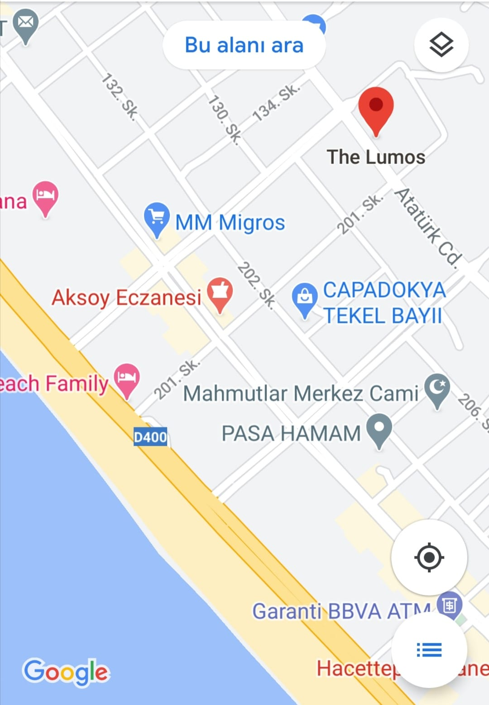

İnşaat Mühendisliği Açısından Deprem
İnşaat mühendisliği açısından deprem nedir? Depremin sismik olarak tanımı yapılacak olursa, yer kabuğunda beklenmedik bir anda ortaya çıkan enerjinin kendisine ait karakteristik özellikleri bulunan sismik dalgalar aracılığıyla yer yüzünü sarsması, büyüklüğü oranında hareket ettirmeye çalışması olayıdır.
İLETİŞİM
Atatürk caddesi No:120 Mahmutlar-ALANYA/ANTALYA TEL:0 242 350 25 25
İnşaat Mühendisliği Açısından Deprem
İnşaat mühendisliği açısından deprem ele alınacak olursa, halk nezdinde deprem dışarıdan yapılara gelen kuvvet olarak algılanır. Yani sismik bir yer hareketi(deprem) söz konusu olduğunda, sanki bir el yapıyı hareket ettirmeye, itmeye (push over=statik itme), sallamaya çalışıyormuş gibi algılanır. Aslında bu yanlış bir algıdır.